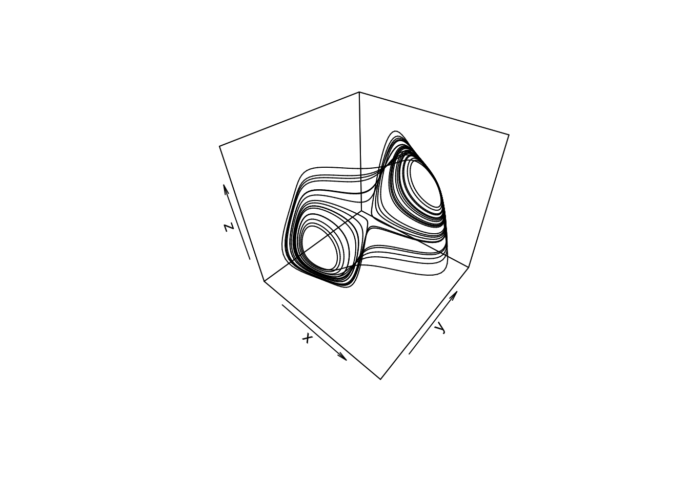
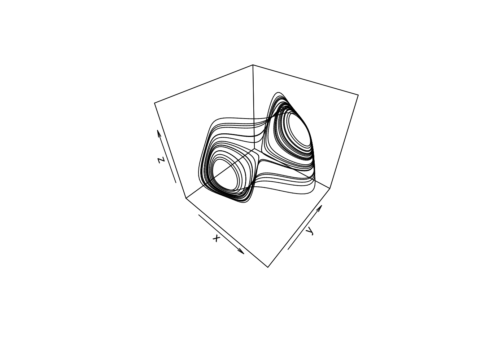

Social Networks
Social network of friendships between 34 members of a karate club at a US university in the 1970s.
See W. W. Zachary, An information flow model for conflict and fission in small groups, Journal of Anthropological Research 33, 452-473 (1977).
# Community membership
karate <- graph.famous("Zachary")
wc <- walktrap.community(karate)
plot(wc, karate)

[1] 0.3532216
[1] 1 1 2 1 5 5 5 1 2 2 5 1 1 2 3 3 5 1 3 1 3 1 3 4 4 4 3 4 2 3 2 2 3 3
# What does this matrix look like?
get.adjacency(karate)
34 x 34 sparse Matrix of class "dgCMatrix"
[1,] . 1 1 1 1 1 1 1 1 . 1 1 1 1 . . . 1 . 1 . 1 . . . . . . . . . 1 . .
[2,] 1 . 1 1 . . . 1 . . . . . 1 . . . 1 . 1 . 1 . . . . . . . . 1 . . .
[3,] 1 1 . 1 . . . 1 1 1 . . . 1 . . . . . . . . . . . . . 1 1 . . . 1 .
[4,] 1 1 1 . . . . 1 . . . . 1 1 . . . . . . . . . . . . . . . . . . . .
[5,] 1 . . . . . 1 . . . 1 . . . . . . . . . . . . . . . . . . . . . . .
[6,] 1 . . . . . 1 . . . 1 . . . . . 1 . . . . . . . . . . . . . . . . .
[7,] 1 . . . 1 1 . . . . . . . . . . 1 . . . . . . . . . . . . . . . . .
[8,] 1 1 1 1 . . . . . . . . . . . . . . . . . . . . . . . . . . . . . .
[9,] 1 . 1 . . . . . . . . . . . . . . . . . . . . . . . . . . . 1 . 1 1
[10,] . . 1 . . . . . . . . . . . . . . . . . . . . . . . . . . . . . . 1
[11,] 1 . . . 1 1 . . . . . . . . . . . . . . . . . . . . . . . . . . . .
[12,] 1 . . . . . . . . . . . . . . . . . . . . . . . . . . . . . . . . .
[13,] 1 . . 1 . . . . . . . . . . . . . . . . . . . . . . . . . . . . . .
[14,] 1 1 1 1 . . . . . . . . . . . . . . . . . . . . . . . . . . . . . 1
[15,] . . . . . . . . . . . . . . . . . . . . . . . . . . . . . . . . 1 1
[16,] . . . . . . . . . . . . . . . . . . . . . . . . . . . . . . . . 1 1
[17,] . . . . . 1 1 . . . . . . . . . . . . . . . . . . . . . . . . . . .
[18,] 1 1 . . . . . . . . . . . . . . . . . . . . . . . . . . . . . . . .
[19,] . . . . . . . . . . . . . . . . . . . . . . . . . . . . . . . . 1 1
[20,] 1 1 . . . . . . . . . . . . . . . . . . . . . . . . . . . . . . . 1
[21,] . . . . . . . . . . . . . . . . . . . . . . . . . . . . . . . . 1 1
[22,] 1 1 . . . . . . . . . . . . . . . . . . . . . . . . . . . . . . . .
[23,] . . . . . . . . . . . . . . . . . . . . . . . . . . . . . . . . 1 1
[24,] . . . . . . . . . . . . . . . . . . . . . . . . . 1 . 1 . 1 . . 1 1
[25,] . . . . . . . . . . . . . . . . . . . . . . . . . 1 . 1 . . . 1 . .
[26,] . . . . . . . . . . . . . . . . . . . . . . . 1 1 . . . . . . 1 . .
[27,] . . . . . . . . . . . . . . . . . . . . . . . . . . . . . 1 . . . 1
[28,] . . 1 . . . . . . . . . . . . . . . . . . . . 1 1 . . . . . . . . 1
[29,] . . 1 . . . . . . . . . . . . . . . . . . . . . . . . . . . . 1 . 1
[30,] . . . . . . . . . . . . . . . . . . . . . . . 1 . . 1 . . . . . 1 1
[31,] . 1 . . . . . . 1 . . . . . . . . . . . . . . . . . . . . . . . 1 1
[32,] 1 . . . . . . . . . . . . . . . . . . . . . . . 1 1 . . 1 . . . 1 1
[33,] . . 1 . . . . . 1 . . . . . 1 1 . . 1 . 1 . 1 1 . . . . . 1 1 1 . 1
[34,] . . . . . . . . 1 1 . . . 1 1 1 . . 1 1 1 . 1 1 . . 1 1 1 1 1 1 1 .
34 people sre in the karate class, a 1 is printed if they know each other. You can do a clustering analysis for any 0-1 matrix!
J.2 Social Networks
Social network of friendships between 34 members of a karate club at a US university in the 1970s.

34 people sre in the karate class, a 1 is printed if they know each other. You can do a clustering analysis for any 0-1 matrix!